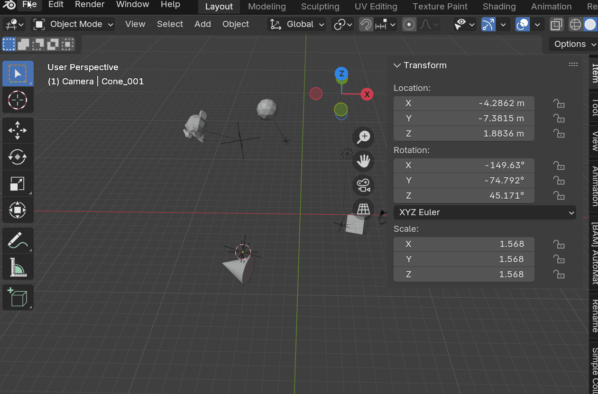
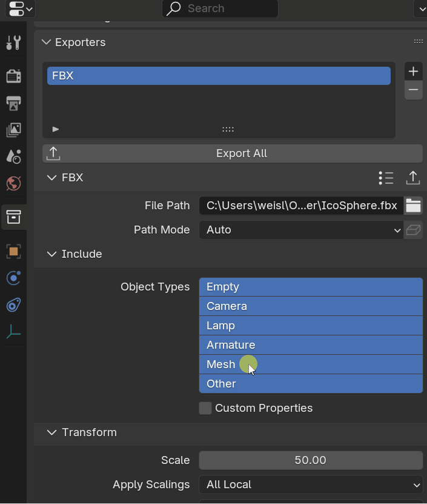

User Guide
Simple Export is a more convenient way to use Blenders built in exporters with all current export formats (fbx, alembic, usd, obj, gltf, ply, stl). The export presets can be created in the same way as you would configure Blenders built in presets and exporters but supercharges the process.
Other export add-ons often focus exclusively on getting the final asset from Blender to the game engine. **Simple Export ** is designed to be more versatile, covering other export needs like baking or sending data to another software.
Presets
Simple Export distinguishes between 2 types of presets: Export Collection Presets and Format Presets:
- Export Collection Presets are used to configure the export collection, such as the export path, prefix, suffix, and collection offset and are format agnostic.
- Format Presets are format specific and use Blenders internal format presets to configure the export settings for the given file format.They include scale, axis orientation, and other format-specific settings.
Creating Format Presets
Simple Export uses Blender's built-in preset system. It detects pre-existing presets. You can create them in familiar ways.
- Export Panel: Go to
File -> Export -> [file format]to open Blender's export panel for the given file format. Select the settings you want and save the preset in the top-right corner. - Properties Panel: Go to
Properties -> Collection -> Exporters, select the export settings you want to save, and save them as a preset by clicking the three lines next to the file format and setting a name.
Applying the presets with the addon operator will also make sure that some of the settings are applied correctly, such as ignoring the selection or the filepath that causes issues when applied in the default Blender export panel.
Export Panel

Properties Panel

My workflow
To really get the most out of Simple Export, I need to explain my workflow and how I use it in my day-to-day. I have a heavily collection based workflow. I recommend checking it out if you are interested in becoming more efficient and seing how I create my artworks.
I shared my workflow and strategies in the Blender Conference 2024 Talk: Game Art Insights: Art, Tech and Teamwork, where I talk about using Blender in non Blender game pipelines. This addon will help you streamline some of the steps outlined in my presentation and automate it further.
Simple Export ships with three presets for exporting static meshes to Unity, Godot, and Unreal Engine. Game art creation is not always a straightforward transfer of data. A Blender scene might contain high- and low-poly meshes to be baked, in addition to the final game assets. It is, therefore, important to customize your export collections to work for all situations.